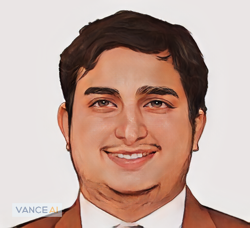
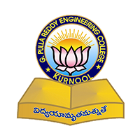
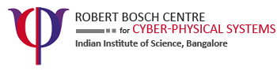
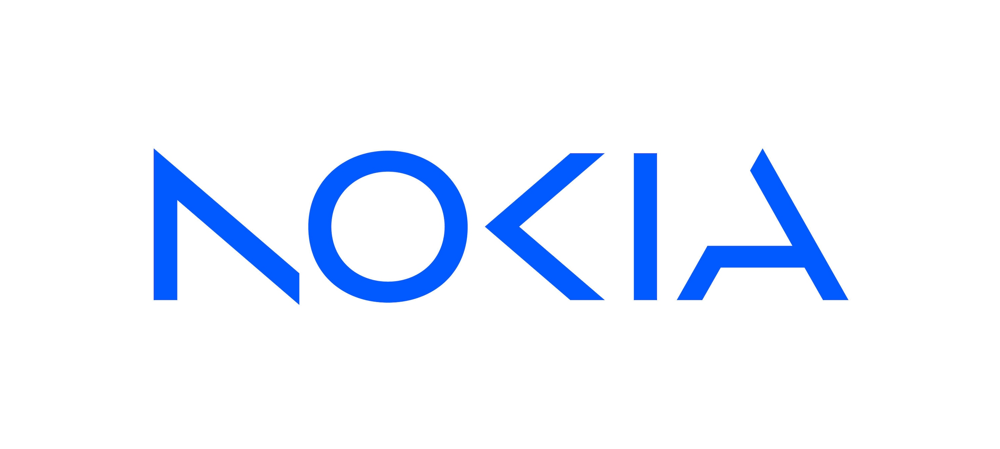

<!doctype html>
<html lang="en">
  <head>

    <!-- Required meta tags -->
    <meta charset="utf-8">
    <meta name="viewport" content="width=device-width, initial-scale=1, shrink-to-fit=no">
    <meta name="description" content="PhD Scholar, IISc">
    <meta name="author" content="Srikrishna Acharya">
    <meta name="theme-color" content="#222222">

    <link rel="apple-touch-icon" sizes="180x180" href="images/nicons/apple-touch-icon.png">
    <link rel="icon" type="image/png" sizes="32x32" href="images/nicons/favicon-32x32.png">
    <link rel="icon" type="image/png" sizes="16x16" href="images/nicons/favicon-16x16.png">

    <!-- Bootstrap CSS -->
    <link rel="stylesheet" href="https://cdn.jsdelivr.net/gh/jpswalsh/academicons@1/css/academicons.min.css">
    <script src="https://kit.fontawesome.com/36020f8391.js" crossorigin="anonymous"></script>
    <link rel="stylesheet" href="//maxcdn.bootstrapcdn.com/font-awesome/4.3.0/css/font-awesome.min.css">
    <link rel="stylesheet" href="https://stackpath.bootstrapcdn.com/bootstrap/4.4.1/css/bootstrap.min.css" integrity="sha384-Vkoo8x4CGsO3+Hhxv8T/Q5PaXtkKtu6ug5TOeNV6gBiFeWPGFN9MuhOf23Q9Ifjh" crossorigin="anonymous">
    <link rel="stylesheet" href="assets/style-3.css">
    <link rel="preconnect" href="https://fonts.googleapis.com">
    <link rel="preconnect" href="https://fonts.gstatic.com" crossorigin>
    <link rel="stylesheet" href="https://fonts.googleapis.com/css2?family=Roboto+Mono:wght@300;400;500&display=swap">
    <link rel="stylesheet" href="assets/site.css">
      
    <title>Srikrishna Acharya</title>
  </head>
  <body>
    <a class="skip-link" href="#content">Skip to content</a>

    <header class="site-topbar" id="top">
      <div class="container topbar-inner">
        <a class="brand" href="#about">Srikrishna Acharya</a>
        <nav class="topnav" aria-label="Primary">
          <a class="topnav-link" href="#about">About</a>
          <a class="topnav-link" href="#experience">Experience</a>
          <a class="topnav-link" href="#certifications">Certifications</a>
          <a class="topnav-link" href="#publications">Publications</a>
          <a class="topnav-link" href="#talks">Talks</a>
        </nav>
        <button class="icon-btn" id="themeToggle" type="button" aria-label="Toggle theme" aria-pressed="false">
          <i class="fa fa-moon-o" aria-hidden="true" data-icon></i>
          <span data-label>Dark</span>
        </button>
      </div>
    </header>

    <div class="container page-wrap allstuffp" id="content">
        <div class="row allstuff">
            <aside class="col-md-4 pt-4">
                <div class="fixed-posi sidebar-card" data-reveal>
                
                <p class="name mt-3 mb-1">Srikrishna Acharya</p>

                <ul class="social-links" aria-label="Social links">
                    <li><a href="files/Resume.pdf" aria-label="Resume"><i class="fa fa-black-tie" aria-hidden="true"></i></a></li>
                    <li><a href="https://github.com/srikrishna3118/" aria-label="GitHub"><i class="fa fa-github" aria-hidden="true"></i></a></li>
                    <li><a href="https://scholar.google.com/citations?user=LOh1hLwAAAAJ&hl" aria-label="Google Scholar"><i class="ai ai-google-scholar-square" aria-hidden="true"></i></a></li>
                    <li><a href="https://www.linkedin.com/in/srikrishna-acharya-91a42b5a/" aria-label="LinkedIn"><i class="fa fa-linkedin" aria-hidden="true"></i></a></li>
                    <li><a href="https://tryurself.blogspot.com/" aria-label="Blog"><i class="fa fa-rss" aria-hidden="true"></i></a></li>
                    <li><a href="https://twitter.com/thisisbsk" aria-label="Twitter"><i class="fa fa-twitter" aria-hidden="true"></i></a></li>
                    <li><a href="https://www.instagram.com/srikrishna3118/" aria-label="Instagram"><i class="fa fa-instagram" aria-hidden="true"></i></a></li>
                    <li><a href="https://www.youtube.com/channel/UC3FEtz3vcAm18UdoF9_C8Mg" aria-label="YouTube"><i class="fa fa-youtube" aria-hidden="true"></i></a></li>
                </ul>

                <div class="quick-actions">
                  <a class="pill-btn" href="mailto:srikrishna3118@gmail.com"><i class="fa fa-envelope" aria-hidden="true"></i> Email</a>
                  <button class="pill-btn" type="button" data-copy="srikrishna3118@gmail.com"><i class="fa fa-copy" aria-hidden="true"></i> Copy</button>
                </div>

                <div class ="pt-4" >
                  <div class="timeline" id="timeline" role="listbox" aria-label="Timeline">
                    <div class="timeline-item">
                      <span class="timeline-dot" aria-hidden="true"></span>
                      <button class="timeline-btn" type="button" role="option" aria-selected="false" tabindex="-1" data-title="GPREC" data-years="2007-2011" data-desc="B.Tech (Electronics and Communications Engineering).">
                        
                        <span class="timeline-meta">
                          <span class="timeline-title">GPREC</span>
                          <span class="timeline-years">2007-2011</span>
                        </span>
                      </button>
                    </div>
                    <div class="timeline-item">
                      <span class="timeline-dot" aria-hidden="true"></span>
                      <button class="timeline-btn" type="button" role="option" aria-selected="false" tabindex="-1" data-title="IIIT-Delhi" data-years="Aug 2012 - 2014" data-desc="M.Tech (VLSI and Embedded Systems). Teaching Assistant (Aug 2012 - 2013).">
                        
                        <span class="timeline-meta">
                          <span class="timeline-title">IIIT-Delhi</span>
                          <span class="timeline-years">Aug 2012-2014</span>
                        </span>
                      </button>
                    </div>
                    <div class="timeline-item">
                      <span class="timeline-dot" aria-hidden="true"></span>
                      <button class="timeline-btn" type="button" role="option" aria-selected="false" tabindex="-1" data-title="STMicroelectronics" data-years="Jul 2013 - 2014" data-desc="Research Intern (Joint IIIT-Delhi &amp; ST MTech program). Thesis: &quot;Realistic Rendering of 3D Avatar Using Physics Simulation and Minimal Sensors&quot;.">
                        
                        <span class="timeline-meta">
                          <span class="timeline-title">STMicroelectronics</span>
                          <span class="timeline-years">Jul 2013-2014</span>
                        </span>
                      </button>
                    </div>
                    <div class="timeline-item">
                      <span class="timeline-dot" aria-hidden="true"></span>
                      <button class="timeline-btn" type="button" role="option" aria-selected="false" tabindex="-1" data-title="Zenatix" data-years="Oct 2014 - 2016" data-desc="Associate, Technology (Oct 2014 - 2016). Helped conceptualize and develop hardware; designed hardware/firmware and ensured robust field operation.">
                        
                        <span class="timeline-meta">
                          <span class="timeline-title">Zenatix</span>
                          <span class="timeline-years">Oct 2014-2016</span>
                        </span>
                      </button>
                    </div>
                    <div class="timeline-item">
                      <span class="timeline-dot" aria-hidden="true"></span>
                      <button class="timeline-btn" type="button" role="option" aria-selected="false" tabindex="-1" data-title="IISc (RBCCPS)" data-years="Jul 2016 - 2022" data-desc="Technical Associate at RBCCPS (Jul 2016 - 2017). PhD Scholar at IISc (Aug 2017 - 2022).">
                        
                        <span class="timeline-meta">
                          <span class="timeline-title">IISc (RBCCPS)</span>
                          <span class="timeline-years">Jul 2016-2022</span>
                        </span>
                      </button>
                    </div>
                    <div class="timeline-item is-active">
                      <span class="timeline-dot" aria-hidden="true"></span>
                      <button class="timeline-btn" type="button" role="option" aria-selected="true" tabindex="0" data-title="Nokia" data-years="Aug 2022 - present" data-desc="Senior Research Specialist at Nokia ST NSD Radio Interface & Access Group (RIAG).">
                        
                        <span class="timeline-meta">
                          <span class="timeline-title">Nokia</span>
                          <span class="timeline-years">Aug 2022-present</span>
                        </span>
                      </button>
                    </div>
                  </div>

                  <div class="timeline-detail" aria-live="polite">
                    <div class="timeline-detail-title" data-timeline-detail-title>Nokia</div>
                    <div class="timeline-detail-years" data-timeline-detail-years>Aug 2022 - present</div>
                    <div class="timeline-detail-desc" data-timeline-detail-desc>Senior Research Specialist at Nokia ST NSD Radio Interface &amp; Access Group (RIAG).</div>
                  </div>
                </div>
                </div>

            </aside>
            <main class="col-md-8 pt-4 about">
                <section id="about" class="lead-block" data-reveal>
        I am a Senior Research Specialist at Nokia (ST NSD Radio Interface &amp; Access Group  RIAG), based in Bengaluru, India. Previously, I was a PhD Scholar at IISc. <br><br>
        During my time as PhD Scholar at <a href="https://cps.iisc.ac.in">Robert Bosch Centre for Cyber Physical Systems
				</a>, co advised by <a href="https://aml.ece.iisc.ac.in/index.php/Bharadwaj_Amrutur">
				  Prof Bharadwaj Amrutur</a> and <a href="http://cds.iisc.ac.in/faculty/simmhan/">Prof Yogesh Simmhan</a>.
				  Currently I am part of <a href="https://aml.ece.iisc.ac.in/index.php/Autonomous_Machines_Laboratory">
					Autonomous Machines Lab</a>, where we explore wide range of problems include, but
				  not limited to, collaborative robotics, Learning based Robots, and Network enabled Multi-Robot Systems.
				  My primary research focus is to build co-simulation framework that capture the complete cyber-physical
				  systems aspects of the multi-robot systems. <br> <br>


				  I did my master's in VLSI and Embedded Systems at <a href="https://www.iiitd.ac.in/"> IIIT-Delhi, Delhi</a>.
				  During my course I worked as Research Intern at Advance Systems and Technology (AST) Group, STMicroelectronics,
				  where I worked on various research problems in the area of 3D computer graphics and image processing.
				  The primary focus of the team is to work on open-source tools and research papers and integrating them
				  into their existing tools.
				  My course project is  to minimize usage of sensors(IMU) for rendering realistic 3D-Avatar
				  using physics simulation<sup><a href="https://repository.iiitd.edu.in/xmlui/handle/123456789/145">1</a></sup>,
				  where I was advised by <a href="https://acce12.iiitd.ac.in/sujit">Dr. P.B Sujit</a>.<br><br>

				  I have a batchelor's degree in Electronics and Communications Engineering from <a href="https://www.gprec.ac.in/"> GPREC, Kurnool</a>.<br>


          If you wish to sponsor my work or want to know more about my work, you can contribute to my github sponsor account
            and to how more about the work I am doing please refer to the links to the left.
        <div class="mt-2" data-reveal>
          <iframe src="https://github.com/sponsors/srikrishna3118/button" title="Sponsor srikrishna3118" height="35" width="116" style="border: 0;"></iframe>
        </div>
        </section>

        <h2 class="section-title" id="experience" data-reveal>Experience</h2>

        <div class="py-2">
          <p class="paper my-2 pl-2" data-reveal>
            <span class="papertitle">Senior Research Specialist</span><br>
            Nokia &ndash; Full-time &ndash; Bengaluru, Karnataka, India (Hybrid)<br>
            <span class="conf">Aug 2022 &ndash; present</span><br>
            <span class="conf">ST NSD Radio Interface &amp; Access Group (RIAG)</span>
          </p>
        </div>

        <div class="py-2">
          <p class="paper my-2 pl-2" data-reveal>
            <span class="papertitle">PhD Scholar</span><br>
            Indian Institute of Science (IISc) &ndash; Bengaluru Area, India<br>
            <span class="conf">Aug 2017 - Jul 2022</span>
          </p>
        </div>

        <div class="py-2">
          <p class="paper my-2 pl-2" data-reveal>
            <span class="papertitle">Technical Associate</span><br>
            Indian Institute of Science (IISc) &ndash; Robert Bosch Centre for Cyber-Physical Systems (RBCCPS)<br>
            <span class="conf">Jul 2016 - Jul 2017</span><br>
            I was a Technical Associate at Robert Bosch Centre for Cyber-Physical Systems. We, as a group, work on various inter-disciplinary projects related to smart neighborhoods. I am part of IoT for Smart City Task Force (iot4sctf), a technology-driven open forum of domain experts from industry, academia, government, startups, professional bodies, and user agencies.
          </p>
        </div>

        <div class="py-2">
          <p class="paper my-2 pl-2" data-reveal>
            <span class="papertitle">Associate, Technology</span><br>
            Zenatix Solutions &ndash; Gurgaon, India<br>
            <span class="conf">Oct 2014 - May 2016</span><br>
            I was one of the initial employees helped to conceptualize and develop the hardware at Zenatix. My primary responsibility to solve real time problems by designing simple hardware, related firmware, and ensuring it's robust operations in the field.
          </p>
        </div>

        <div class="py-2">
          <p class="paper my-2 pl-2" data-reveal>
            <span class="papertitle">Assistant Professor</span><br>
            Jaypee University of Information Technology, Waknaghat &ndash; Waknaghat, Solan<br>
            <span class="conf">Jul 2014 - Sep 2014</span><br>
            Teaching and mentoring B. Tech students.
          </p>
        </div>

        <div class="py-2">
          <p class="paper my-2 pl-2" data-reveal>
            <span class="papertitle">Research Intern</span><br>
            STMicroelectronics &ndash; Noida<br>
            <span class="conf">Jul 2013 - Jun 2014</span><br>
            Under Joint Collaborative MTech program by IIIT-Delhi and STMicroelectronics, I completed my thesis entitled &quot;Realistic Rendering of 3D Avatar Using Physics Simulation and Minimal Sensors&quot;.
          </p>
        </div>

        <div class="py-2">
          <p class="paper my-2 pl-2" data-reveal>
            <span class="papertitle">Teaching Assistant</span><br>
            IIIT-Delhi &ndash; New Delhi Area, India<br>
            <span class="conf">Aug 2012 - Jun 2013</span><br>
            As part of my MTech program, I worked as a Teaching Assistant. Over two semesters, I supported Linear Algebra and Computer Organization courses and was involved in tutorials, lab exercises, quizzes, and evaluation.
          </p>
        </div>

        <div class="py-2">
          <p class="paper my-2 pl-2" data-reveal>
            <span class="papertitle">Assistant System Engineer &ndash; Trainee</span><br>
            Tata Consultancy Services &ndash; (location not specified)<br>
            <span class="conf">Mar 2012 - Jul 2012</span><br>
            Trained in ASP.Net.
          </p>
        </div>

        <h2 class="section-title" id="certifications" data-reveal>Certifications</h2>

        <div class="py-2">
          <p class="paper my-2 pl-2" data-reveal>
            <span class="papertitle">Data Operations Practitioner Training</span><br>
            <span class="conf">appliedAI Initiative GmbH</span><br>
            <span class="conf">Issued: 12 December 2025  Does not expire</span><br>
            <a class="tag" href="https://www.credential.net/ae609341-8dae-4f73-869d-8ae50aeec627?utm_source=linkedin&utm_medium=social" target="_blank" rel="noopener">credential</a>
          </p>
        </div>

         <h2 class="section-title" id="publications" data-reveal>Publications</h2>
         <div class="py-2">
         <p class="paper my-2 pl-2" data-reveal>
           <span class="papertitle">Rapid prototyping of Industry 4.0 use cases for warehouse automation
						using a Network-Robot Co-Simulation Framework</span><br>
						<span class="thisauthor"><strong>Srikrishna Acharya</strong></span>, Parv Maheshwari, Mukunda Bharatheesa, Amrutur Bharadwaj, Yogesh Simmhan<br>
           <span class="conf"><a class="confshort" href="/files/FINAL_ICRA2022.pdf">Arxiv</a> | Yet to be publish</span><br>
         </p>
         </div>
         <div class="py-2">
         <p class="paper my-2 pl-2" data-reveal>
           <span class="papertitle">CORNET2.0: A Co-Simulation Middleware for Robot Networks</span><br>
					 <span class="thisauthor"><strong>Srikrishna Acharya</strong>*</span>, Amrutur Bharadwaj, Mukunda Bharatheesa, Yogesh Simmhan<br>
           <span class="conf"><a class="confshort" href="https://ieeexplore.ieee.org/xpl/conhome/9668311/proceeding">COMSNETS 2022</a> | 2022 14th International Conference on COMmunication Systems & NETworkS (COMSNETS)</span><br>
           <a class="tag" href="https://ieeexplore.ieee.org/document/9668501"
             target="_blank">paper</a> |
           <a class="tag" href="#" target="_blank">presentation</a>  |
					 <a class="tag" href="#" target="_blank">cite</a> |
					 <a class="tag" href="#" target="_blank">github</a> |
         </p>   </div>

         <div class="py-2">
           <p class="paper my-2 pl-2" data-reveal>
             <span class="papertitle">A Co-Simulation Framework for Communication and Control in Autonomous Multi-Robot Systems</span><br>
             <span class="thisauthor"><strong>Srikrishna Acharya</strong>*</span>, Mukunda Bharatheesha, Yogesh Simmhan, Bharadwaj Amrutur<br>
             <span class="conf"><a class="confshort" href="https://ieeexplore.ieee.org/xpl/conhome/10341341/proceeding">IROS</a> | 2023 IEEE/RSJ International Conference on Intelligent Robots and Systems (IROS)</span><br>
             <a class="tag" href="https://ieeexplore.ieee.org/abstract/document/10342407" target="_blank">paper</a> |
             <a class="tag" href="#" target="_blank">presentation</a>  |
             <a class="tag" href="#" target="_blank">cite</a> |
             <a class="tag" href="#" target="_blank">github</a> |
           </p>
         </div>
         <div class="py-2">
            <p class="paper my-2 pl-2" data-reveal>
              <span class="papertitle">Network Emulation For Tele-driving Application Development</span><br>
              <span class="thisauthor"><strong>Srikrishna Acharya</strong>*</span>, S Sadgun S Devanahalli , Alok Rawat, Varghese P Kuruvilla, Pratik Sharma, Bharadwaj Amrutur, Ashish Joglekar, Raghu Krishnapuram, Yogesh Simmhan, Himanshu Tyagi<br>
              <span class="conf"><a class="confshort" href="https://ieeexplore.ieee.org/xpl/conhome/9352735/proceeding">COMSNETS 2021</a> | 2021 International Conference on COMmunication Systems & NETworkS (COMSNETS)</span><br>
              <a class="tag" href="https://ieeexplore.ieee.org/document/9352914"
                target="_blank">demo paper</a> |
              <a class="tag" href="https://www.youtube.com/watch?v=NBMEQNX4m0I" target="_blank">presentation</a>  |
              <a class="tag" href="#" target="_blank">cite</a> |
              <a class="tag" href="#" target="_blank">github</a> |
            </p>   </div>
            <div class="py-2">
              <p class="paper my-2 pl-2" data-reveal>
                <span class="papertitle">Network Based Multi-Bot Awareness</span><br>
                G Dhanaprakaash, Bishal Jaiswal, <span class="thisauthor"><strong>Srikrishna Acharya</strong>*</span>, Anush Kumar, Aruul Mozhi Varman, Kavish Shah, Mohitvishnu Srinivas Gadde, Sourav Mishra, Aditya Gopalan, Bharadwaj Amrutur, Himanshu Tyagi, Preetam Patil, Raghu Krishnapuram, Soumya Subhra Banerjee, Suresh Sundaram<br>
                <span class="conf"><a class="confshort" href="https://ieeexplore.ieee.org/xpl/conhome/9352735/proceeding">COMSNETS 2021</a> | 2021 International Conference on COMmunication Systems & NETworkS (COMSNETS)</span><br>
                <a class="tag" href="https://ieeexplore.ieee.org/abstract/document/9352810"
                  target="_blank">poster</a> |
                <a class="tag" href="#" target="_blank">presentation</a>  |
                <a class="tag" href="#" target="_blank">cite</a> |
                <a class="tag" href="#" target="_blank">github</a> |
              </p>   </div>
				 <div class="py-2">
					<p class="paper my-2 pl-2" data-reveal>
						<span class="papertitle">CORNET: A Co-Simulation Middleware for Robot Networks</span><br>
						<span class="thisauthor"><strong>Srikrishna Acharya</strong>*</span>, Amrutur Bharadwaj, Yogesh Simmhan, Aditya Gopalan, Parimal Parag , Himanshu Tyagi<br>
						<span class="conf"><a class="confshort" href="https://ieeexplore.ieee.org/xpl/conhome/9011703/proceeding">COMSNETS 2020</a> | 2020 International Conference on COMmunication Systems & NETworkS (COMSNETS)</span><br>
						<a class="tag" href="https://ieeexplore.ieee.org/abstract/document/9027459"
							target="_blank">paper</a> |
						<a class="tag" href="#" target="_blank">presentation</a>  |
						<a class="tag" href="#" target="_blank">cite</a> |
						<a class="tag" href="#" target="_blank">github</a> |
					</p>   </div>
              <div class="py-2">
                <p class="paper my-2 pl-2" data-reveal>
                  <span class="papertitle">PUF based secure framework for hardware and software security of drones</span><br>
                  Vishal Pal, <span class="thisauthor"><strong>Srikrishna Acharya</strong>*</span>, Somesh Shrivastav, Sourav Saha, Ashish Joglekar, Bharadwaj Amrutur<br>
                  <span class="conf"><a class="confshort" href="https://ieeexplore.ieee.org/xpl/conhome/9352735/proceeding">AsianHOST</a> | 2020 Asian Hardware Oriented Security and Trust Symposium (AsianHOST)</span><br>
                  <a class="tag" href="https://ieeexplore.ieee.org/abstract/document/9358264"
                    target="_blank">short paper</a> |
                  <a class="tag" href="#" target="_blank">presentation</a>  |
                  <a class="tag" href="#" target="_blank">cite</a> |
                  <a class="tag" href="#" target="_blank">github</a> |
                </p>   </div>
                <div class="py-2">
                <p class="paper my-2 pl-2" data-reveal>
                  <span class="papertitle">PUF based secure framework for hardware and software security of drones</span><br>
                  Vishal Pal, <span class="thisauthor"><strong>Srikrishna Acharya</strong>*</span>, Somesh Shrivastav, Sourav Saha, Ashish Joglekar, Bharadwaj Amrutur<br>
                  <span class="conf"><a class="confshort" href="https://ieeexplore.ieee.org/xpl/conhome/9352735/proceeding">AsianHOST</a> | 2020 Asian Hardware Oriented Security and Trust Symposium (AsianHOST)</span><br>
                  <a class="tag" href="https://ieeexplore.ieee.org/abstract/document/9358264"
                    target="_blank">short paper</a> |
                  <a class="tag" href="#" target="_blank">presentation</a>  |
                  <a class="tag" href="#" target="_blank">cite</a> |
                  <a class="tag" href="#" target="_blank">github</a> |
                </p>   </div>

                           <h2 class="section-title" id="talks" data-reveal>Talks</h2>
                 <div class="py-2">
                           <p class="paper my-2 pl-2" data-reveal>
                     <span class="papertitle">CORNET2.0: A Co-Simulation Middleware for Robot Networks - Mr. Srikrishna Acharya</span><br>
                     This talk is part of 'Student Research Seminar Series, 2021', an IEEE-IISc ComSoc & IEEE-IISc SPS collaborative event.<br>
                     <span class="conf">IEEE-IISc ComSoc Chapter</span> <br>

                     <a class="tag" href="https://www.youtube.com/watch?v=EPdzZ9SfjuU" target="_blank">video</a><span class="tagsep">|</span>
                     <a class="tag" href="#"
                         target="_blank">abstract</a>
                 </p>
                 </div>

                 <div class="py-2">
                   <p class="paper my-2 pl-2" data-reveal>
                     <span class="papertitle">Next-Generation Communications and Networking</span><br>
                     A Brainstorming Workshop on “Next-Generation Communications and Networking” is organised in hybrid mode by DRDO Industry Academia Raman Centre of Excellence (DIA-RCoE) IISc Bangalore and TIFAC at IISc Bangalore.<br>
                     <span class="conf">DIA-RCoE</span>
                   </p>
                 </div>
                 </main>


        </div>
    </div>

    <button class="back-to-top" id="backToTop" type="button" aria-label="Back to top">
      <i class="fa fa-arrow-up" aria-hidden="true"></i>
    </button>

    <!-- Optional JavaScript -->
    <!-- jQuery first, then Popper.js, then Bootstrap JS -->
    <script src="https://code.jquery.com/jquery-3.4.1.slim.min.js" integrity="sha384-J6qa4849blE2+poT4WnyKhv5vZF5SrPo0iEjwBvKU7imGFAV0wwj1yYfoRSJoZ+n" crossorigin="anonymous"></script>
    <script src="https://cdn.jsdelivr.net/npm/popper.js@1.16.0/dist/umd/popper.min.js" integrity="sha384-Q6E9RHvbIyZFJoft+2mJbHaEWldlvI9IOYy5n3zV9zzTtmI3UksdQRVvoxMfooAo" crossorigin="anonymous"></script>
    <script src="https://stackpath.bootstrapcdn.com/bootstrap/4.4.1/js/bootstrap.min.js" integrity="sha384-wfSDF2E50Y2D1uUdj0O3uMBJnjuUD4Ih7YwaYd1iqfktj0Uod8GCExl3Og8ifwB6" crossorigin="anonymous"></script>
    <script src="assets/site.js"></script>
</body>
</html>